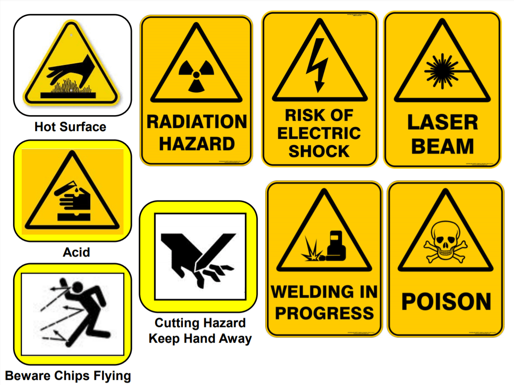
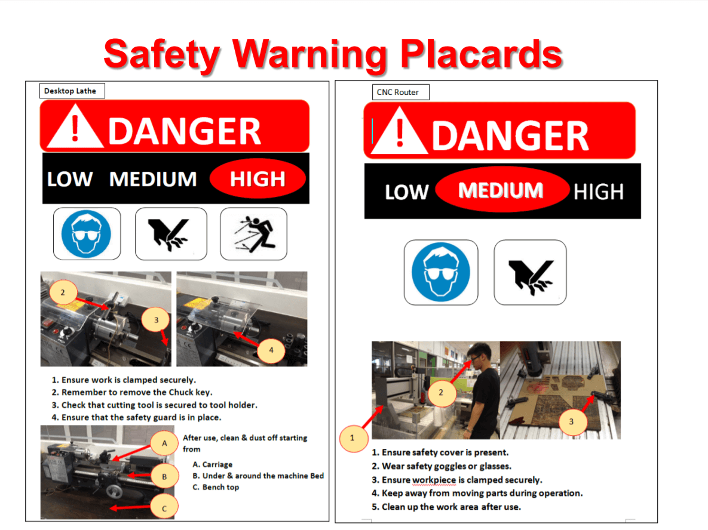
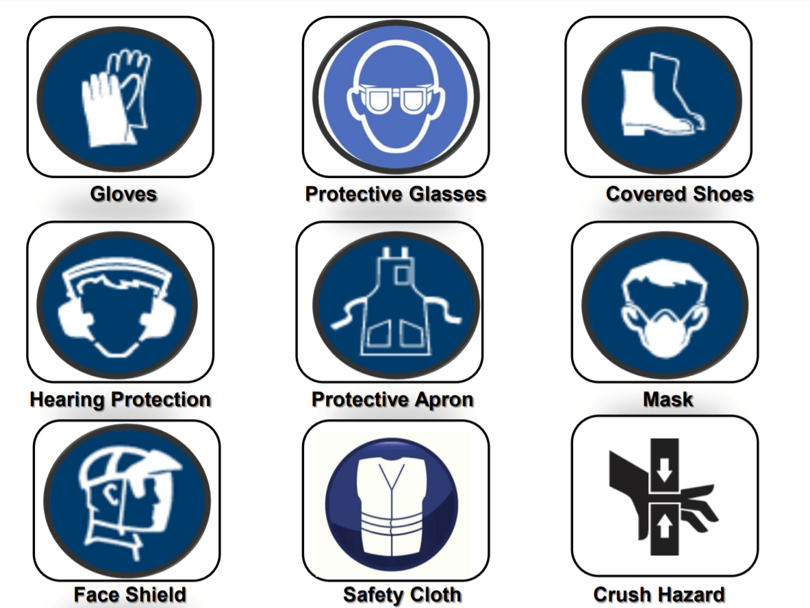

Objectives:
- To understand WSH regulations in SP and the safe practices in Fab Lab/workshops.
- To be familiarised with the safety infrastructure in Fab Lab/workshops and to know machines’ hazards.
General Safety Rules & Regulations in SP
SP's SAFE Framework
- Support and engage students on safety & health issues in campus.
- Act on 4 main focus areas: Risk Management Capability, Incident-Accident Reporting, Training & Education on WSH, Emergency Preparedness and Response Plan
- Facilitate emergency drill, in-house training/workshops and outreach programme.
- Educate all students and staff about safety and health awareness through a series of talk using WSH communication kit as well as online quizzes and safety modules.
Emergency Procedures
In the event of accident, students must immediately inform the lecturer or TSO. Dial 995 for Ambulance/SCDF, call SP Emergency hotline 6772-1234 for all emergencies and incident reporting.
When making an emergency call, it is essential to give precise information as follows:
- Name of caller
- Location (block and room number)
- Nature of emergency e.g. fire, explosion, violent or abusive behaviour, etc.
Incident/Accident Reporting
- Report all work related injuries, no matter how minor, promptly to technical support staff or supervising staff.
- Contact the school’s general office or call 67721234 when treatment to injury is required.
- Do not leave injury unattended or without treatment.
Handling Hazards
We must understand the risks involved in handling hazardous materials in the laboratories.


Personal Protective Equipment (PPE)
We must be trained in the use of the appropriate personal protective equipment and donning them.

Importance of PPE
Here I have listed the possible causes of injuries as well as the preventive measures.
- Causes of Head injuries: impact of falling, flying object, head bumping of fixed object, hair entanglement. Prevention: Wear helmet/caps
- Causes of Eyes injuries: flying objects (sparks), tools, particles, chemicals, harmful radiation. Prevention: Wear safety goggles/shield
- Cause of Hearing problems: prolong exposure to loud or high pitch noises. Prevention: Wear ear plugs/earmuffs to prevent Noise Induced Deafness
- Causes of feet/leg injuries: slipping, cuts & punctures, falling objects, metal/chemical splash. Prevention: always wear long pants and covered shoes (toe caps may be required)
- Causes of Respiratory problems: dust, harmful aerosols, oxygen-deficient atmospheres. Prevention: Wear respirators that filter contaminated air/supply clean air
- Causes of Body injuries: Extreme temperatures, chemical/metal splash, spray from pressure leaks/spray guns, impact/penetration, contaminated dust, excessive wear/entanglement of own clothing. Prevention: Wear aprons and coveralls.
Hazards associated with machinery and workplace
There are hazards everywhere in the workshops, whether it is mechanical or non-mechanical ones. Below shows all the hazards that can be present in Fablab. (Source: Fablab@SP)
Machine Guards and Safety Devices
Machine guards serve as a barrier to keep workers from touching moving parts of machines and protect workers from flying debris, sparks and splashing chemicals. Safety devices provide protection and allow workers to operate the machinery with minimal restrictions. The document below shows all the machine guards and safety devices in Fablab. (Source: Fablab@SP)
Using Hand/Power Tools Responsibly
It is important to handle tools with extra cautiousness. This is to prevent injuries to the hands. Good housekeeping are also required to eliminate hazards, provide a safe working environment, and allows access to various places/tools. A detailed guide is shown below. (Source: Fablab@SP)